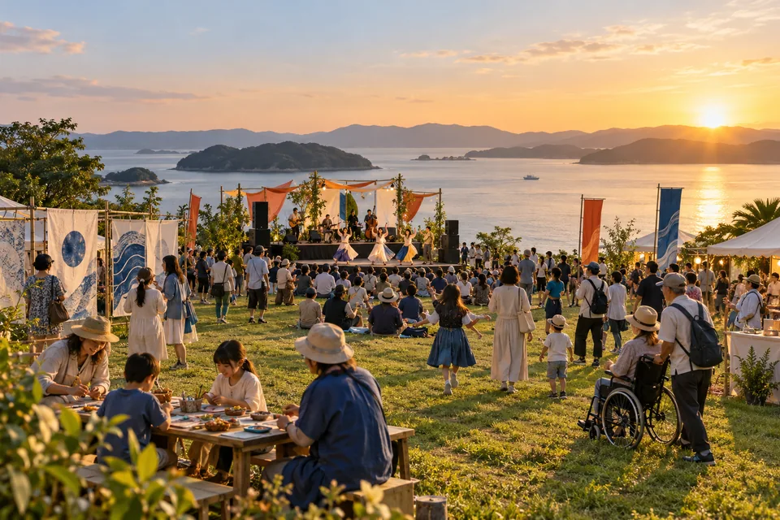
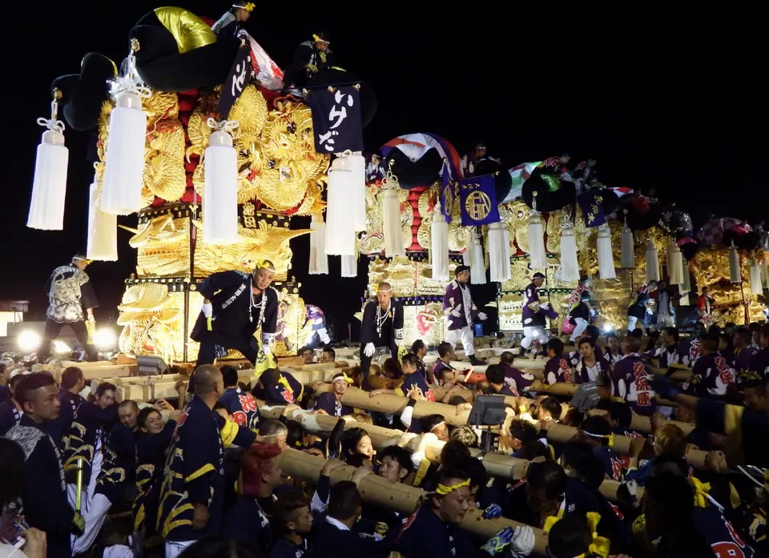
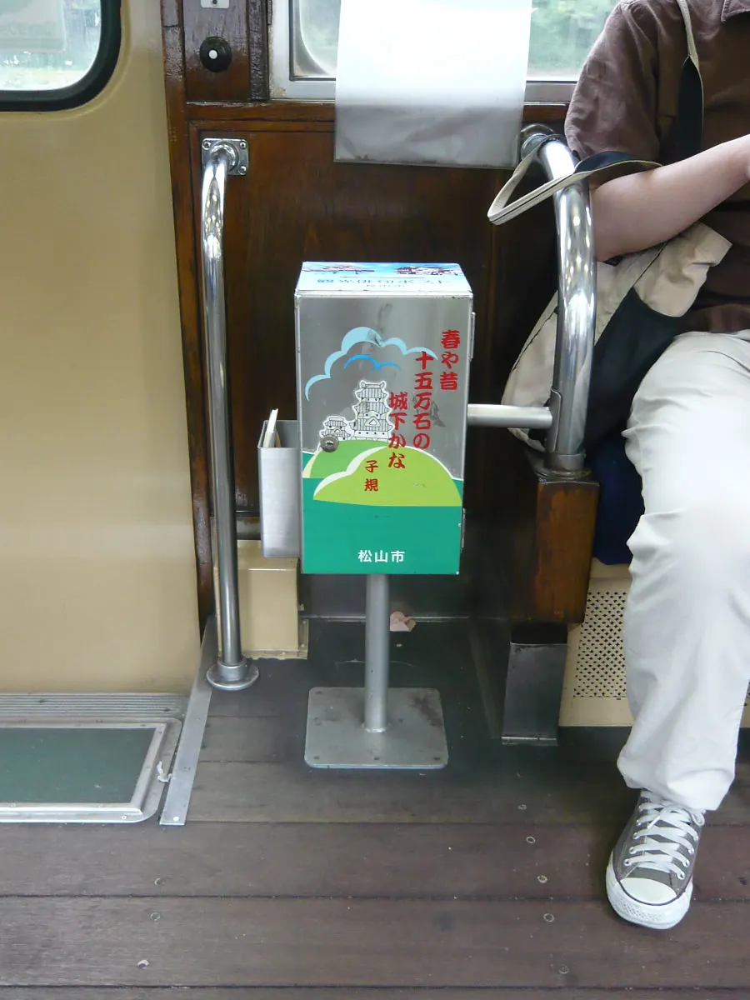
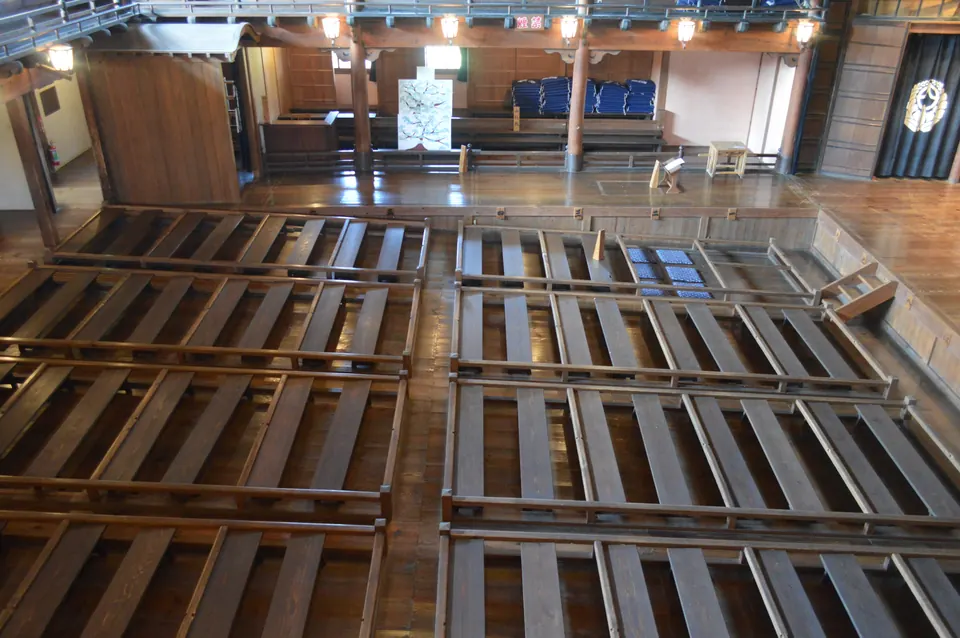
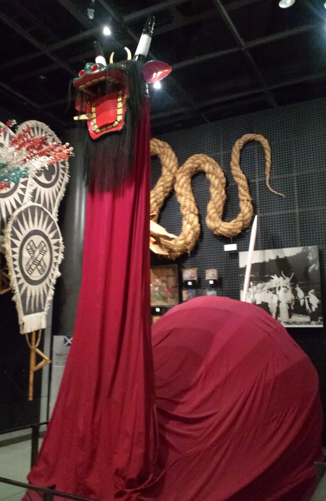
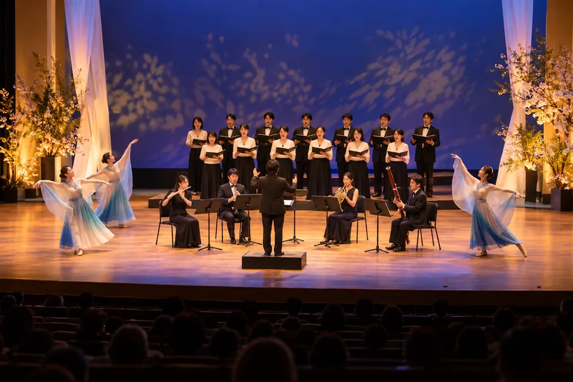
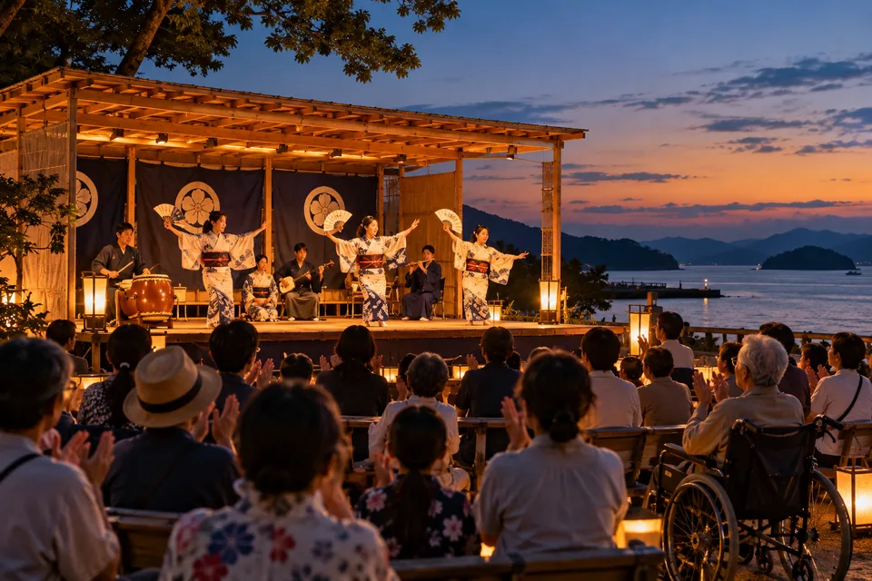

EHIME / CULTURE / 2028
愛媛を、ひらく。
観る。つくる。出会う。
文化の担い手は、あなた。
愛顔（えがお）えひめの文化祭2028
202810.22—12.03
第43回国民文化祭
第28回全国障害者芸術・文化祭

舞台も、作品も、ことばも、食も。文化祭のAI生成イメージA CULTURE IS A CONNECTION.
土地の時間に、
出会う。
写真を見て、背景を読む。
東予、中予、南予の文化をたどります。

写真：Dokudami · 2016-10-20 原写真 · CC BY-SA 4.0表示用に縮小・WebP変換。画面に合わせてトリミング。新居浜太鼓祭り / 新居浜市
担ぐのは、地域の記憶。
金糸の飾り、その下には、地域でつないできた時間がある。
1818–1830文政年間の記録に「神輿太鼓」
新居浜市の歴史解説は、太鼓台の記録が文政年間に現れることを紹介しています。起源の時期は、確かな資料では分かっていません。
背景を、もう少し。
瀬戸内の港町に太鼓台が広がった背景には、海上交通による物資と文化の交流があると考えられています。別子銅山による産業の発展と、飾りや大きさの変化も結び付いています。
写真の、どこを見よう。
金糸の輪郭と、担ぐ人々の並び。ひとつの飾りと、集団の動きの両方を見てみる。
新居浜太鼓祭りの記録写真。2016年10月20日撮影。

写真：Rs1421 · 2008-08-19 原写真 · CC BY-SA 3.0表示用に縮小・WebP変換。画面に合わせてトリミング。俳都松山俳句ポスト / 松山市
まちの途中に、十七音。
文学は、記念館の中だけにあるのではない。路面電車にも、ことばの入口がある。
1968松山城長者ヶ平に第1号を設置
松山市は1968年、松山城長者ヶ平に第1号の俳句ポストを設けました。市の2026年8月の発表では、市内82か所に設置されています。
背景を、もう少し。
路面電車やフェリーにも置かれる俳句ポスト。移動の途中で感じた景色を、自分のことばで残す仕組みが、日々の暮らしと俳句をつないでいます。
写真の、どこを見よう。
窓の外の景色と、車内の小さなポスト。名所ではなく、移動の途中に目を向ける。
伊予鉄道の車内にある俳句ポスト。2008年8月19日の記録写真。現在の車内設備を保証するものではありません。

写真：Asturio Cantabrio · 2024-08 原写真 · CC BY-SA 4.0表示用に縮小・WebP変換。画面に合わせてトリミング。内子座 / 内子町
舞台を残したのは、人の熱意。
客席も、花道も、舞台も。ここに集まる人のために、建物の時間が続いてきた。
1916町の人々が建てた芝居小屋
内子座は1916年、木蝋や生糸の生産で栄えた町に、芸術・芸能を愛する人々が建てた芝居小屋です。歌舞伎、人形芝居、落語、映画などの場になりました。
背景を、もう少し。
取り壊しの危機を町民の熱意によって越え、1985年に劇場として再出発。現在は保存修理のため休館しています。文化を受け継ぐことには、上演だけでなく、場所を守る営みも含まれます。
写真の、どこを見よう。
客席から舞台までの近さ、木の柱、花道。観る人と演じる人の位置関係をたどる。
内子座の客席と舞台。2024年8月撮影。2024年9月から保存修理のため長期休館中。大会会場の案内ではありません。

写真：Yanajin33 · 2014-01-25 原写真 · CC BY-SA 4.0表示用に縮小・WebP変換。画面に合わせてトリミング。牛鬼 / 宇和島市
牛と鬼、その姿を受け継ぐ。
形を見て、由来を読む。ひとつの土地にも、まだ分からない歴史がある。
1967市民イベントとしての牛鬼まつり開始
宇和島市は、牛鬼を、牛に似た胴体と鬼のような顔、剣をかたどった尾を持つ練物として紹介しています。祭りでは、神輿の露払いとして地域をまわります。
背景を、もう少し。
うわじま牛鬼まつりは1967年に市民イベントとして始まりました。牛鬼そのものの起源は十分には解明されていません。伝承と、確かめられた記録を分けて読むことも、文化に出会う方法です。
写真の、どこを見よう。
顔、胴体、尾。その形の違いを、名前の「牛」と「鬼」に重ねてみる。
写真は大阪の国立民族学博物館に展示された1978年製作の牛鬼。2014年1月25日撮影。宇和島での祭りの開催写真ではありません。
実写と自治体の公開資料を使った文化紹介です。新たな現地取材・インタビューの記録ではありません。写真の文化行事と、本大会の催しの掲載例は別の情報です。
各画像はAI生成のイメージです。実在の催し・作品の記録ではありません。
確認済み1件と架空の掲載例5件。元v1の全4仮イベントを含みます。各画像はAI生成です。

松山市 / 舞台
2026年10月31日（土）
確認済み
松山市 / 舞台
2028-08-12（仮の日付）
催しの掲載例砥部町 / 工芸
2028-08-18（仮の日付）
催しの掲載例松山市 / 文学
2028-09-09（仮の日付）
催しの掲載例宇和島市 / 食文化
2028-09-02（仮の日付）
催しの掲載例MANY CULTURES. ONE FESTIVAL.
愛媛から、全国へ。
このまちの表現が、
誰かとの出会いになる。
晴れの舞台に響く音。作品の前で交わすことば。つくり手と囲む食卓。文化祭をつくるのは、さまざまな地域と、ひとりひとりの表現です。
国民文化祭と全国障害者芸術・文化祭を一体的に開催する43日間。観る、つくる、支える。あなたらしい関わり方から、愛媛の文化へ。
大会の概要文化祭の全体案内MYCULTURENOTES●EHIME / 2028 MAKE IT YOURS
気になる文化を、
一冊に。
文化の記録から残した、自分のことば。
行ってみたい催しと一緒に、文化帖で見返せます。
わたしの文化帖を開くOPEN TO EVERYONE
楽しみたい気持ちに、
入口をひらく。
出演、出展、ボランティア、応援事業、協賛。文化をつくる関わり方を、募集案内から探せます。参加に必要な支援も、催しの情報と一緒に確認できます。
参加・募集の案内参加の支援

.jpg){kind=link}